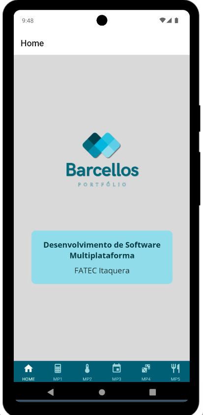
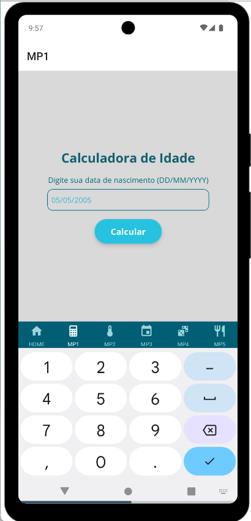
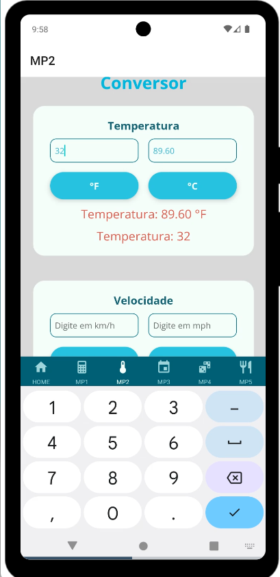
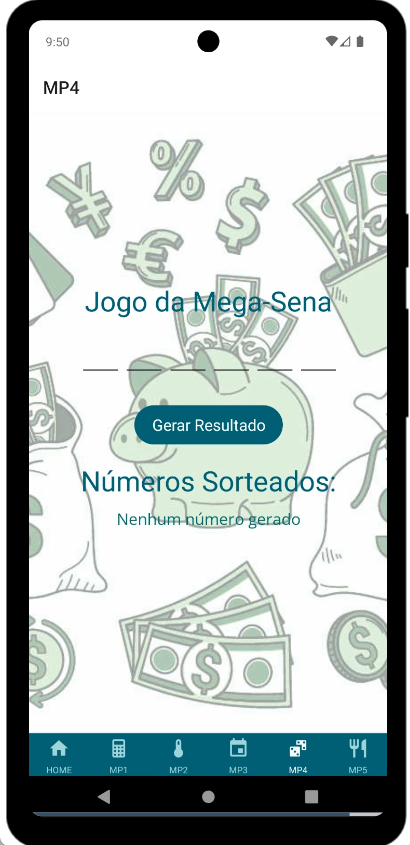
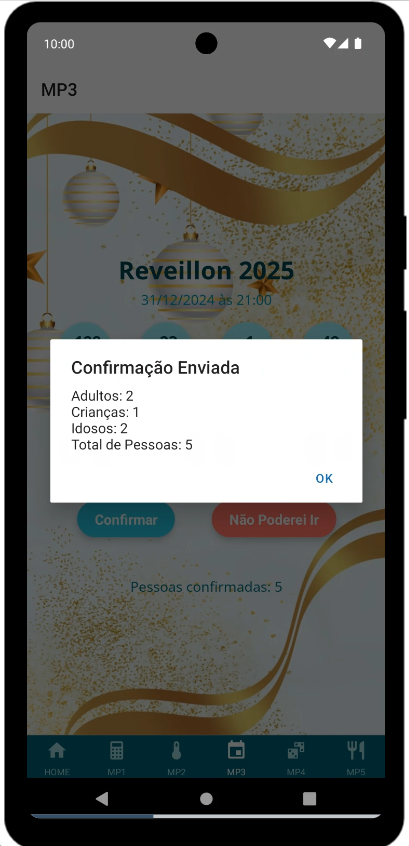
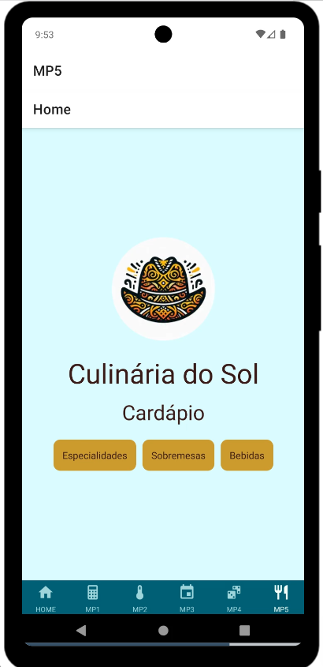

Portfólio React-Native

Menu Principal

Mini Projeto 1

Mini Projeto 2

Mini Projeto 3

Mini Projeto 4

Mini Projeto
Sobre o Projeto
Este projeto foi desenvolvido como atividade prática da disciplina Programação para Dispositivos Móveis II, com o objetivo de reunir os cinco primeiros mini projetos em uma única aplicação, organizada e modernizada. Além da integração, foi criada uma identidade visual própria, aplicada em todos os projetos anteriores.
Objetivos
- Revisitar e reunir os mini projetos MP1 a MP5.
- Organizar o código e corrigir falhas detectadas nos projetos originais.
- Aprimorar a experiência visual e usabilidade dos aplicativos.
- Unificar a navegação e identidade visual.
Identidade Visual
Para reforçar a proposta de modernidade e harmonia visual, foi desenvolvida uma identidade visual exclusiva para esta aplicação. Os elementos escolhidos foram:
- Paleta de Cores: Tons de turquesa, verde e cinza, transmitindo frescor, equilíbrio e criatividade.
- Tipografia: Open Sans, com boa legibilidade e aparência amigável em dispositivos móveis.
- Logo personalizado criado especialmente para o projeto, com formas arredondadas, reforçando o conceito de simplicidade e modernidade.
Participação da Aluna
- Reestruturação e integração de código em React Native e Expo.dev.
- Criação da nova identidade visual (cores, tipografia e logo).
- Aprimoramento de layout e usabilidade de todas as telas.
- Publicação dos projetos no SnackExpo e repositório pessoal no GitHub.
Recursos Utilizados
- React Native
- React Navigation
- JavaScript
- Expo.dev
- Open Sans
- Canva, Inkscape e Adobe Color para desenvolvimento visual
← Voltar para o Portfólio